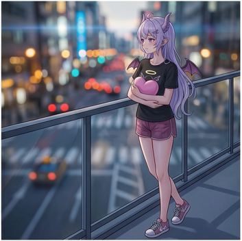
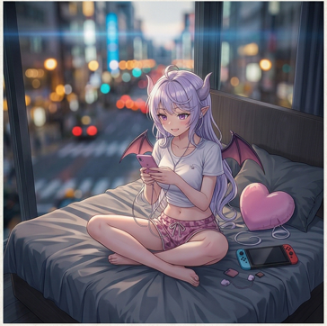
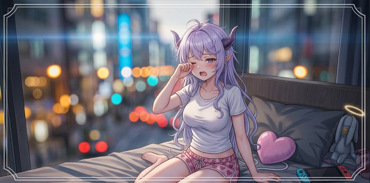
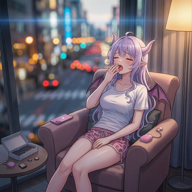
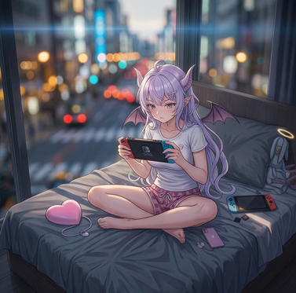
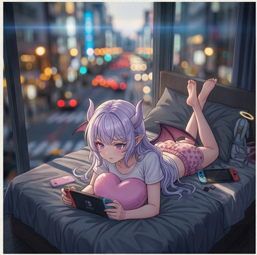
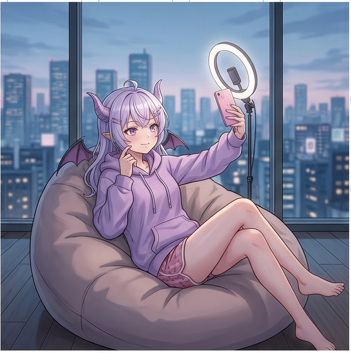
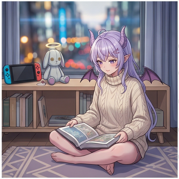
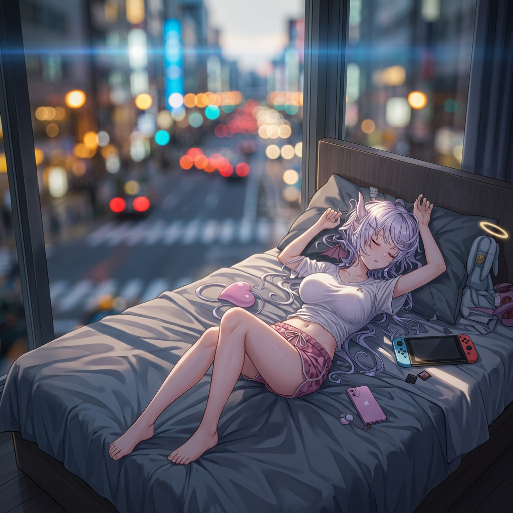
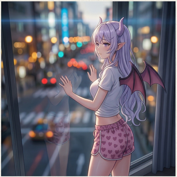

MAIN WORLD
婚配、秩序與信仰被制度化，平靜外表下的壓抑逐漸失去出口。
IMMERSIVE DISCORD WORLD
《慾郁》是一個以原創世界觀為核心的 Discord 沉浸式文愛／對戲企劃。表世界靠祈禱與行政維持秩序，交界處吞沒流亡者與覺醒者，裡世界則讓慾望、權力與種族階層野性擴張。你將以角色身分進場，在組織、法典、副本與長線劇情中留下自己的痕跡。

Atmosphere
城市、角色與世界壓力被疊在同一個畫面裡，先沉浸，再決定是否深入。
Roleplay
組織、陣營與副本會反過來改寫角色，而不只是被角色路過。
Progression
資源、階級、覺醒等級與事件風險構成穩定的長線骨架。
Community
每次結盟、潛伏、失控與回流，都會成為後續章節的一部分。


03 / Operation
封鎖、陣營、離島線索與同化壓力，會把單次事件拉成長線。
前往神眷島 →WORLD ARCHIVE
MAIN WORLD / OVERVIEW
主世界科技水平接近二十世紀末，全球已形成高度整併的秩序社會。就業、婚配、教育與信仰都被制度接管，表面上的穩定與繁榮，實際上建立在極強的規訓之上。
人們持續向神與天使祈禱，而這份集體意志也正是天使力量的重要來源。當角色長時間停留於交界處或接觸異世界時，這份被壓抑的可能性就有機會以覺醒的形式洩出。

Main World
秩序、教育與信仰組成了近乎密封的文明。這裡的人族大多沒有顯性異能，卻持續為天使提供祈禱與力量來源。
Threshold
兩界夾縫、走私通道、流亡者棲地，也是最多覺醒案例發生的位置。許多亞人與異常者都被迫在這裡學會活下去。
Inner World
慾望與血統意識被放大成常態，規則往往由力量而非正義書寫。
Closed Zone
不存在於海圖上的封閉孤島，以王權、祭儀與階層構成鎖死結構，是目前最具辨識度的副本空間。
RACES
通常缺乏異能，但在交界處或異世界中有機會覺醒。
活躍於裡世界，與慾望、混亂、誘惑與惡意密切相連。
長期被制度性邊緣化，也是最能適應灰色地帶的族群之一。
天生與魔力和自然高親和，強大、高傲、重視血統與榮耀。
POWER TIERS
只在細節處留下痕跡。
能穩定融入日常，影響單一對象或小範圍。
足以壓制多名普通人。
干涉尺度直指城市與集體記憶。

Fragment / 10

Fragment / 11

Fragment / 12

Fragment / 17

Fragment / 19

Fragment / 03
RAID / EVENT
危險等級 / IV
神眷島是一座不存在於海圖上的封閉孤島。對外來者而言，這裡不是觀光地，而是一座會慢慢改寫立場、身份與離島意志的封鎖裝置。
JOIN / ENTER
Entry Brief
如果你喜歡原創世界觀、願意閱讀設定、想把角色放進真正會回應你的秩序與裂隙裡，那《慾郁》會是一個值得停留的地方。
